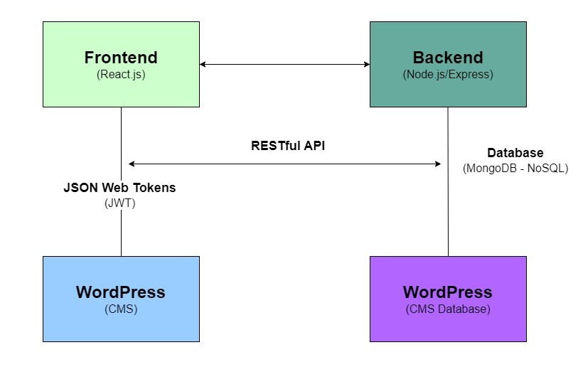

Where knowledge meets collaboration! Acadify is a non-profit platform dedicated to helping students access academic resources and foster a supportive learning community.
Acadify is a student-led initiative that aims to bridge the gap in academic resource accessibility.
Our platform allows students to share and access study materials, notes, and resources for free, creating a culture of knowledge-sharing and support.
Purpose and Objectives
Acadify was created with a clear purpose: to address the challenges that students face in accessing academic resources.
The primary goals of Acadify are:
- Facilitate Resource Sharing: Provide a platform where students can freely share and access academic materials such as PDF books, journals,
articles, and school notes.
- Foster Community Collaboration: Build a supportive community where students can interact, discuss topics, and collaborate on academic endeavors.
- Promote Educational Equity: Ensure that all students, regardless of financial constraints, have access to essential academic resources to support their learning journeys.
Problem Statement and Need
The idea for Acadify emerged from the observation that many students encounter obstacles in acquiring costly academic resources, which can hinder their educational progress. Acadify seeks to bridge this gap by creating a platform where students can share their unused study materials and benefit from resources contributed by others.
The need for Acadify is evident in the growing demand for accessible and affordable educational resources. By offering a centralized platform for resource sharing and community engagement, Acadify aims to democratize education and promote a culture of knowledge exchange among students.
Technologies and Tools Used in Development
Acadify leverages a modern technology stack to deliver a seamless user experience and robust functionality.
The development of Acadify involves the use of:
- Frontend Technologies: HTML, CSS, JavaScript (React.js)
- Backend Technologies: Node.js, Express.js
- Database: MongoDB
- Authentication and Security: JSON Web Tokens (JWT), bcrypt.js
- Deployment: Docker, AWS (Amazon Web Services)
These technologies were carefully chosen to ensure scalability, security, and responsiveness in Acadify's design and functionality. They enable us to create a user-friendly platform that meets the diverse needs of our student community. In summary, Acadify is not just a platform—it's a movement towards educational inclusivity and collaboration. Join us in this journey to revolutionize the way students access and share academic resources. Together, we can make learning more accessible and equitable for all.
Acadify's architecture is designed to support efficient resource sharing, community interaction,
and seamless user experiences. Below is an overview of the project's architecture,
describing its key components and interactions.

Architecture Diagram
The architecture of Acadify consists of several components that work together to deliver a cohesive platform for students:
-
Frontend (Client-Side):
The frontend of Acadify is built using React.js, a popular JavaScript library for building user interfaces. It provides a responsive and interactive experience for users accessing the platform through web browsers.
-
Backend (Server-Side):
The backend of Acadify is powered by Node.js and Express.js, which handle server-side logic and API endpoints. This component manages data retrieval, storage, and authentication processes.
-
Database Management:
Acadify utilizes MongoDB, a NoSQL database, to store and manage academic resources, user profiles, and community interactions. MongoDB's flexibility and scalability are leveraged to accommodate dynamic data requirements.
-
Authentication and Security:
Authentication and security measures are implemented using JSON Web Tokens (JWT) for user authentication and authorization. Passwords are securely hashed using bcrypt.js to protect user credentials.
-
Deployment and Infrastructure:
Acadify is deployed using WordPress, a popular content management system (CMS), which provides flexibility and scalability for managing and hosting the platform's content and functionalities. WordPress allows for easy customization and integration of plugins, making it suitable for Acadify's requirements.
Components and Interactions
- Client-Server Interaction: The frontend communicates with the backend server via RESTful API endpoints to fetch data and perform CRUD (Create, Read, Update, Delete) operations on resources.
- Database Integration: MongoDB is integrated with the backend to store and retrieve data efficiently. Data models and schemas are defined to maintain consistency and structure within the database.
- Authentication Flow: User authentication is managed through JWT tokens, where users receive tokens upon successful login and use them to access protected routes and resources.
Detailed Architecture Documentation
For more detailed information on Acadify's architecture, you can refer to our comprehensive architecture documentation, which includes detailed diagrams, component descriptions, and interaction flows. Please click here to access the detailed documentation.
At Acadify, we follow a structured development process that emphasizes collaboration, iterative improvement, and responsiveness to user feedback.
Below is an overview of our development methodology, stages, and challenges encountered during the project lifecycle.
Work Breakdown Structure
Methodology
The development of Acadify adopts an agile methodology, which allows for continuous iteration and adaptation to evolving requirements. Agile principles guide our approach, promoting transparency, flexibility, and stakeholder engagement throughout the development cycle.
Project Development Plan
Acadify is currently in the prototype stage, where we are conceptualizing and designing the platform before entering the development phase. Here's an overview of our development plan:
- Initiation Phase
- Team Foundation: Establish the core project team and define roles and responsibilities.
- Stakeholder & Communication: Identify project stakeholders and gather input.
- Research: Conduct market research and user surveys to understand needs and preferences.
- Planning Phase
- Scope Definition: Define the scope of Acadify's prototype, outlining key features and functionalities.
- Goal Setting: Set clear objectives and success criteria for the prototype.
- Low-Fidelity Planning: Create initial sketches and wireframes to visualize the platform's layout and structure.
- Execution Phase
- Prototype Development: Build a low-fidelity prototype using tools like Figma to represent the user interface and interactions.
- High Fidelity Initiation: Transition low-fidelity designs to high-fidelity prototypes for refined user experience.
- Monitoring Phase
- Testing Prototype: Conduct usability testing and gather feedback from potential users to identify areas for improvement.
- Refinements: Make refinements based on user feedback to enhance the prototype's functionality and usability.
- Closure Phase
- Reviewing Prototype: Evaluate the final prototype against project goals and objectives.
- Documentation Gathering: Compile documentation including design specifications and user feedback.
- Presentation of Prototype: Present the prototype to stakeholders and gather final input before proceeding to the development phase.
Challenges and Solutions
- Technical Complexity: Integrating diverse technologies and ensuring compatibility posed challenges during development. Regular code reviews, collaboration among team members, and leveraging community resources helped address technical hurdles.
- User Engagement: Encouraging user participation and fostering a vibrant community required strategic initiatives. We implemented incentive contributions and solicited feedback to enhance user engagement.
- Scalability: Planning for scalability and performance optimization was crucial to accommodate growing user demands. We adopted cloud-based solutions and optimized database queries to enhance system responsiveness.
Through effective communication, teamwork, and an adaptive approach, we successfully navigated these challenges, delivering a robust and user-centric platform in alignment with Acadify's vision and goals.
We extend our heartfelt gratitude to the following individuals, mentors/advisors, sponsors, organizations, and team members whose support and contributions have been invaluable in the development of Acadify:
- Mentors / Advisors:
- Sir Reajun Artajo: Thank you for providing guidance, feedback, and mentorship throughout the project's development. Your expertise and insights have been instrumental in shaping Acadify's vision.
- Sponsors and Supporting Organizations:
- Geraldine A. Asmod: We are grateful for your financial support and sponsorship, which has enabled us to pursue the development of Acadify and bring our vision to life.
- Team Members:
- Acknowledgment to all project team members for their dedication and hard work in bringing Acadify to fruition.
During the development of Acadify, we drew inspiration and references from various academic platforms and resources.
-
Academia.edu
Website: academia.edu
Description: Academia.edu is a platform for academics to share research papers. It enables students and researchers to discover academic resources and connect with peers in their fields.
-
Studypool
Website: studypool.com
Description: Studypool is an online marketplace that connects students with tutors for academic help and assistance. It offers a platform for students to collaborate and seek guidance on various academic subjects.
-
ResearchGate
Website: researchgate.net
Description: ResearchGate is a professional network for researchers and scientists to share and access scientific publications, research data, and collaborations. It fosters community engagement and academic networking.
-
Google Scholar
Website: scholar.google.com
Description: Google Scholar is a freely accessible web search engine that indexes scholarly literature across various disciplines. It provides a vast collection of academic articles, journals, and research papers.
We acknowledge their contributions to the development and vision of Acadify as a collaborative platform for academic resource sharing.

.jpg)